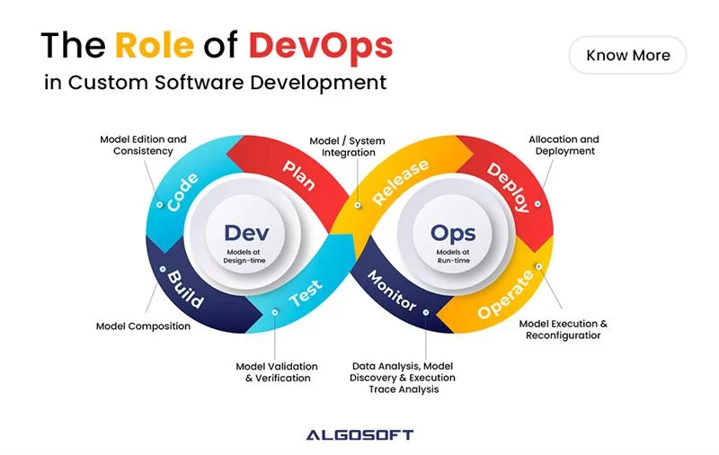

DevOps on tarkvaraarenduse kultuur, mille eesmärgiks on ühendada tarkvaraarendus (Dev) ja tarkvaraoperatsioonid (Ops). Põhilisteks DevOps-i tunnusjoonteks on automatiseerimine ja jälgimine kõigil tarkvaraarenduse etappidel, alates integratsioonist, testimisest ning avaldamisest kuni kasutuselevõtu ja taristu haldamiseni. DevOps pürgib lühemate arendustsüklite, sagedasemate juurutamiste ning töökindlamate (kiirem rikete parandamine) ja rohkem ärinõuetega kooskõlas olevate tarkvaraversioonide avalikustamise poole.
DevOpsi elutsükkel on loodud kvaliteetse tarkvara kiireks tarnimiseks. See koosneb iteratiivsetest ja automatiseeritud töövoogudest, mis toimivad suuremas pidevas arendusprotsessis. Töövoogude nimed ja järjekord võivad organisatsiooniti erineda, kuid tavaliselt sisaldab DevOpsi elutsükkel kaheksat põhietappi:
Selles etapis määratlevad meeskonnad järgmise väljalaske uued funktsioonid ja täiendused. Sisendina kasutatakse kasutajate tagasisidet, juhtumianalüüse ning sisemiste sidusrühmade (platvormi- ja infrastruktuuritiimid, turve, vastavus, riskijuhtimine, ärivaldkonnad) panust.
Eesmärk on luua backlog – prioriseeritud loend funktsioonidest, parandustest ja veaparandustest, mida lisatakse tootele aja jooksul.
DevOpsi meeskond arendab backlog’is määratletud funktsioone. Levinud kodeerimispraktikad on:
Tavaliselt kirjutavad arendajad koodi oma lokaalsetes keskkondades ning edastavad selle seejärel tarnimis/juurutamis torustikku.
Uus kood integreeritakse olemasolevasse koodibaasi, testitakse ning pakendatakse juurutamiseks. Sageli automatiseeritud tegevused hõlmavad:
DevOpsis salvestatakse ehitusetapi väljund sageli binaarrepositooriumisse, kus hoitakse kompileeritud teeke ja käivitatavaid faile edasiseks kasutamiseks.
DevOpsi meeskonnad kasutavad enamasti automatiseeritud testimist, et tagada rakenduse vastavus standarditele ja kvaliteedinõuetele.
Kuigi klassikalises DevOpsis on eraldi testimisfaas, viiakse tänapäeval testimist läbi kogu protsessi vältel. Näiteks:
Pidev testimine toetab shift-left lähenemist, kus testimine tuuakse varasematesse arendusetappidesse, et probleemid avastataks kiiremini.
See on viimane etapp enne kasutajatele kättesaadavaks tegemist. Tehakse lõplikud kvaliteedi-, turbe- ja vastavustestid.
Kui leitakse vigu, saab meeskond need enne tootmiskeskkonda jõudmist parandada. Enamikus DevOpsi torustikes on see protsess suures osas automatiseeritud.
Sageli hõlmab see etapp ka infrastruktuuri (serverid, andmebaasid, koormusjaoturid) loomist infrastruktuur koodina (Infrastructure as Code) põhimõttel.
Rakendus viiakse tootmiskeskkonda, kus kasutajad saavad seda kasutada. Sageli alustatakse juurutamist piiratud kasutajagrupile ning seejärel laiendatakse kõigile.
Selles faasis jälgitakse, et uued funktsioonid töötaksid tõrgeteta. Kasutatakse automatiseeritud jälgimis- ja haldustööriistu, et tagada võrgu, salvestuse, platvormi, arvutusressursside ja turbe korrektne toimimine.
Kogutakse kasutajate tagasisidet ja analüüsitakse varasemate etappide õppetunde. See info suunab järgmise väljalaske planeerimist ja arendust.

DevOps tähtsamad omadused on pidev koostöö ja automatiseerimine. Juhtimistasandil eeldab see pidevat suhtlust ja vastutuse jagamist kõigi sidusrühmade vahel. Tehnilisel tasandil keskendub DevOps automatiseeritud tööriistadele, mis kiirendavad arengut ja vähendavad vigu.
| mis on Head | mis on Vead |
|---|---|
| kiirem arendus ja juurutus, pikemas perspektiivis kuluefektiivsem - automatiseerimine vähendab käsitööd ja vigu | algne juurutus on keeruline - kõik protsessid vajavad aega |
| parem, pidev koostöö kõikide osapoolte vahel | kultuurilised takistused - meeskonnad ei pruugi koostööd kohe omaks võtta |
| stabiilsem süsteem - väiksemaid ja sagedasemaid muudatusi on lihtsam hallata | tööriistade üleküllus - vale valik võib süsteemi liiga keeruliseks muuta |
| kiirem vigade avastamine | turvariskid valel rakendamisel - automatiseerimine ilma turvata on ohtlik |
| paindlikkus ja skaleeritavus - pilv ja konteinerid võimaldavad kiiremat kohanemist, reageerimist | ei sobi igale organisatsioonile - väga väikesed või rangelt reguleeritud keskkonnad |
Viited infole: